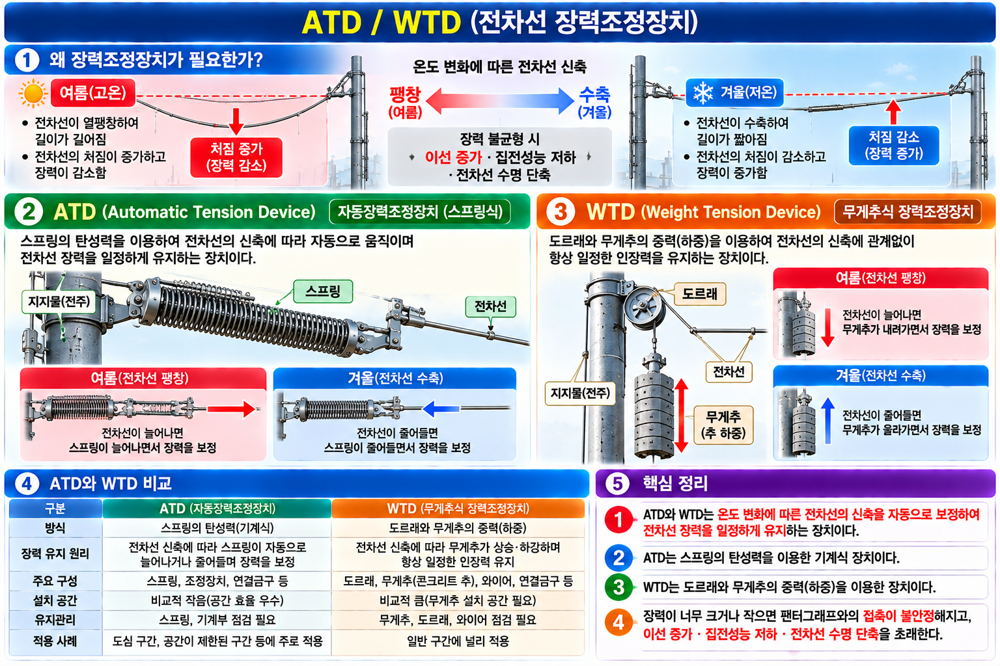

목적: 온도 변화에 따른 전차선 신축(팽창·수축)을 자동 보정하여 장력을 일정하게 유지한다.
| 종류 | 방식 | 특징 |
|---|---|---|
| ATD | 스프링·기계식 | 스프링 탄성력으로 장력 자동 보정 |
| WTD | 추(무게추) 하중 방식 | 추의 중력으로 장력 일정 유지 |

| 문항 | 정답 | 핵심 해설 |
|---|---|---|
| Q1 | ③ | ATD(Automatic Tension Device): 스프링·기계식으로 장력 자동 조정. WTD(Weight Tension Device): 추(하중) 방식으로 장력 유지. 두 장치 모두 온도 변화에 의한 전차선 신축 시 장력을 일정하게 유지하는 역할. |
| Q2 | ② | ATD/WTD의 목적: 온도 변화(열팽창·수축)에 의한 전차선 신축 시 장력을 일정하게 유지. 장력 일정 → 처짐 일정 → 이선율 감소 → 집전 성능 유지. 전압강하 보상은 정류포스트, 절연 분리는 구분장치의 역할. |
| Q3 | ④ | 장력조정장치 효과: 이선율 감소 / 집전 성능 유지 / 전차선 수명 연장. 전압강하 저감은 정류포스트의 역할이며 ATD/WTD와 무관하다. |